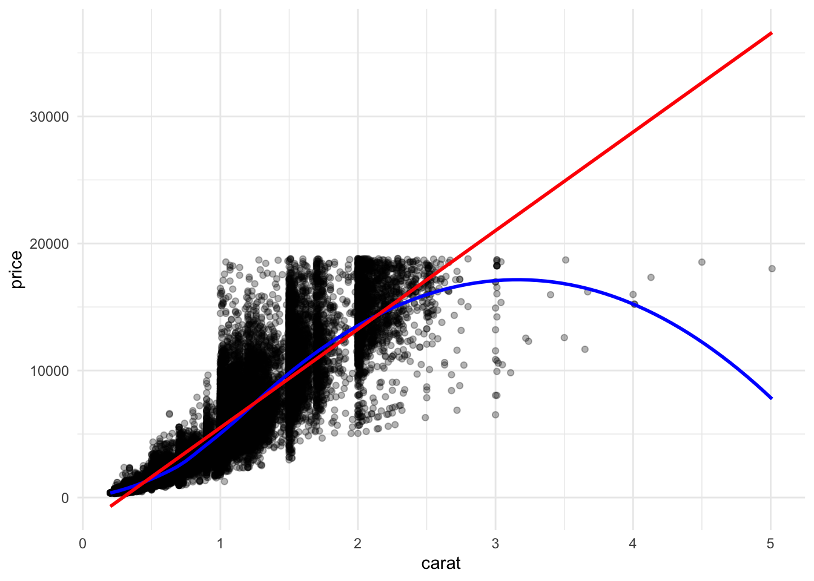
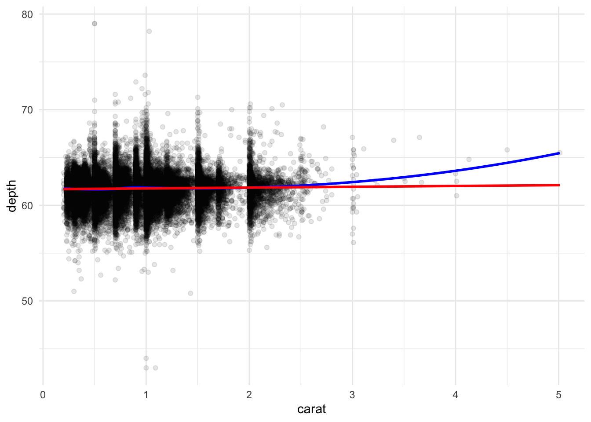

9 — Functions and Control Structures
Setup
🔥 Data Story Critique — Seeing How Much We Ate Over the Years (FlowingData)
Source: https://flowingdata.com/2021/06/08/seeing-how-much-we-ate-over-the-years/
What is the data story?
Nathan Yau uses the USDA Food Availability Data System (1970–2019, loss-adjusted estimates) to visualize how the composition of the average American diet shifted across five decades. The piece is organized into six alluvial diagrams, one per food category — proteins, fresh vegetables, fruits (with fresh fruit and fruit juice broken out), dairy (subdivided into beverage, food, and frozen), grains, and added fats. The narrative spine is rank-crossings over time: chicken overtaking beef in 2004, whole milk losing its near-monopoly to reduced-fat varieties, bananas and strawberries rising while oranges fall, yogurt and cheese rising within the dairy-food category, and so on. The voice is casual and personal (grapefruit juice is “the best kind of juice”); the methodological notes — that these are loss-adjusted availability estimates, and that the USDA revised its fat methodology in 2000 — are tucked into a single short paragraph at the bottom of the post.
What is effective?
The chart choice is genuinely right for the question being asked. When the question is “how did the composition of a category shift over decades, with multiple items crossing rank relative to one another,” an alluvial diagram makes both the levels (ribbon thickness) and the crossings (ribbon-over-ribbon) visible in a single glance. A stacked bar would hide the crossings; a line chart with fifteen overlapping series would be illegible. The form fits the content, which is the hardest design problem in data journalism and the one many otherwise-competent pieces get wrong.
The subdivision of dairy into beverage, food, and frozen is a thoughtful piece of chart hygiene. These categories use different units (gallons, pounds, pounds) and have different behavioural logics; forcing them onto a shared axis would have produced a technically unified but substantively misleading chart. Separating them is the right editorial call.
The casual voice does real work. “How long will chicken reign supreme?” and “Who wins between lemon and lime?” invite the reader into a dataset that could easily feel bureaucratic. Yau is a designer-journalist, not an advocate, and the tone is calibrated to his claims — descriptive rather than prescriptive.
What could be improved?
The core epistemological problem is that the piece consistently calls this “consumption” while the data is supply-side. The USDA Food Availability Data System measures domestic production + imports − exports − non-food uses, divided by population. The loss-adjusted variant subtracts modelled estimates of spoilage, plate waste, and preparation loss to approximate consumption, but the operative word is modelled — the loss factors are assumptions, they vary substantially by food type, and the resulting numbers are a consumption proxy, not a measurement of what anyone actually ate. The headline “Seeing How Much We Ate” elides this. The final-paragraph disclaimer (“tries to get closer to what people actually consume”) names the gap but does not represent it visually. For a reader who stops at the charts, the numbers read as observed fact. A brief note in each chart, or a shaded uncertainty band on the flows, would keep the methodological honesty present rather than footnoted.
The per-capita mean is doing work it cannot carry. American eating patterns vary enormously by income, region, ethnicity, and age. Many of the shifts the piece identifies are class-coded in specific directions: the yogurt rise has not been evenly distributed across the income distribution, the diversification of fresh vegetables (kale, arugula, salad mixes) correlates with food-access patterns that are themselves uneven, and dairy-beverage shifts are entangled with the racial distribution of lactose tolerance. Aggregating to a national mean is consistent with the data source — but it answers a narrower question (“how did aggregate per-capita availability shift”) than the one the title claims (“how we ate”). The Goalkeepers piece we reviewed earlier had to disaggregate to districts to make its story true; this piece has similar disaggregations available (USDA’s data can be joined to income or regional strata through other instruments) and doesn’t use them.
The commodity framework is structurally blind to the two biggest dietary transformations since 1970. Where food is eaten — the rise of restaurant, fast-food, and delivery eating — does not appear, because the commodity data tracks what entered the food system, not where it was plated. And how processed food is — the rise of ultra-processed foods, which NOVA-type classifications have shown to be the dominant structural change in American eating — is invisible because ultra-processed products show up in this dataset decomposed into their raw commodities (flour, sugar, oil, sodium) rather than as the engineered foods people actually buy. The story “how American eating changed since 1970” is in large part these two transformations, and a piece titled accordingly has an obligation to name what the data cannot see.
One minor craft note. The 2000 methodology break for added fats is flagged in prose, but the added-fats chart still invites uninterrupted before-and-after visual comparison. A visible chart break — a dashed separator, a small gap, or a colour shift — would reinforce the caveat where the reader encounters the numbers.
Proportionality. This is a blog post with modest argumentative ambition, not a policy document. The chart-craft is honest and the methodological notes are present. The critique is therefore about calibration: the data-source caveat deserves to live in the charts rather than beneath them, and the title should match what the underlying series can actually claim.
Exercise — Rescaling Function
Code
[1] 0.0 0.5 1.0[1] 0.0000000 0.1666667 1.0000000[1] 0.0 0.5 1.0Two small refinements over a naive version:
- Call
range()once and re-use, instead of computingmin()andmax()separately (cheaper and makes the NA-handling uniform). - Guard the degenerate case where
min == max. Without the guard, every element evaluates to0/0 = NaN, which silently breaks downstream pipelines.
Exercise — Phone-Digit Formatter
Code
format_phone_number <- function(nums) {
# Strip every non-digit so hyphens, parens, dots, and spaces all normalize
digits <- str_remove_all(nums, "[^0-9]")
# Sanity check — exactly 10 digits expected
if (any(str_length(digits) != 10)) {
warning("At least one input does not contain exactly 10 digits after cleaning.")
}
area <- str_sub(digits, 1, 3)
mid3 <- str_sub(digits, 4, 6)
last4 <- str_sub(digits, 7, 10)
str_glue("({area}) {mid3}-{last4}")
}
format_phone_number(c("651-330-8661", "6516966000", "800 867 5309"))(651) 330-8661
(651) 696-6000
(800) 867-5309I used str_glue() rather than str_c() because the target format (###) ###-#### includes a space after the closing paren that’s easy to miss when assembling with str_c(")", mid3, ...). The glue template reads almost identically to the output format, which closes one class of copy-edit bugs.
Exercise — Diagnosing the geom_sf Error
Two distinct problems, both arising from positional matching gone wrong:
Wrong composition operator.
ggplot2layers compose with+, not with the base pipe|>. The pipe converts the expression intogeom_sf(ggplot(), census_data, aes(fill = population)), silently shifting every argument by one position.Positional mismatch against
geom_sf’s signature.geom_sf()’s first argument ismapping, its second isdata. Even without the pipe, writinggeom_sf(census_data, aes(...))tells R thatcensus_datais the mapping, which triggers the error message R actually produced:mappingmust be created byaes().
The fix is either of these:
General lesson. Positional matching is fine for functions whose signature you know by reflex (ggplot(data, mapping), mutate(df, ...)). For everything else — and especially for geom_* functions, whose first argument is mapping, not data, against the reader’s expectation — naming arguments is cheap insurance.
Exercise — Temperature Converter
Code
[1] 32[1] 0[1] 212[1] -40[1] 37Three small choices worth naming:
-
Argument semantics.
unitmeans “the unit the input temperature is in” — sounit = "F"triggers the F → C formula. This is a documentation decision, not an algorithmic one, and it’s where convert-temp functions most often confuse users. -
Input tolerance.
toupper()lets"c"and"f"work; this is cheap and removes a common point of frustration. -
Explicit error on invalid unit. Without the
else stop(), the function silently returnsNULLforunit = "K". SilentNULLreturns are a classic source of downstream bugs; failing loudly is better.
Exercise — Domain-Name Extractor
Code
extract_domain <- function(email) {
# A valid-enough email has @ followed by at least one char,
# a literal dot, and at least one more char.
is_valid <- str_detect(email, "^[^@\\s]+@[^@\\s]+\\.[^@\\s]+$")
if_else(
is_valid,
str_extract(email, "(?<=@).+$"),
"Invalid Email"
)
}
extract_domain("les@mac.edu")[1] "mac.edu"[1] "mac.net"[1] "Invalid Email"[1] "Invalid Email"[1] "b.co" "Invalid Email"Design notes:
- The validation regex
^[^@\s]+@[^@\s]+\.[^@\s]+$encodes “one or more non-at, non-space characters, then @, then one or more non-at non-space characters, then a literal dot, then one or more non-at non-space characters, end of string”. This rejectsles@macedu(no dot),les@mac.(nothing after the dot), anda@b@c.com(two @s), while accepting the valid test cases. - Extraction uses a lookbehind
(?<=@).+$so the@is matched-but-not-captured, avoiding thestr_remove("@")second step. One fewer step means one less place to get it wrong. - Using
if_else()rather thanif ... elsemakes the function vectorised — it handles a vector of emails in a single call, which matches how this would be used inside amutate().
Exercise — count_prop() with Proportions
Code
# A tibble: 5 × 3
cut n prop
<ord> <int> <dbl>
1 Ideal 21551 0.400
2 Premium 13791 0.256
3 Very Good 12082 0.224
4 Good 4906 0.0910
5 Fair 1610 0.0298# A tibble: 10 × 4
cut color n prop
<ord> <ord> <int> <dbl>
1 Ideal G 4884 0.0905
2 Ideal E 3903 0.0724
3 Ideal F 3826 0.0709
4 Ideal H 3115 0.0577
5 Premium G 2924 0.0542
6 Ideal D 2834 0.0525
7 Very Good E 2400 0.0445
8 Premium H 2360 0.0438
9 Premium E 2337 0.0433
10 Premium F 2331 0.0432The pick({{ count_vars }}) pattern is the key to getting both single and multi-variable cases to work from the same function body:
- Bare
{ count_vars }works for a single variable but fails forc(cut, color)because thec()gets evaluated insidecount()and concatenates the columns. - Wrapping in
pick()tells dplyr to treat the{ var }expression the wayselect()would — as a specification of columns rather than a call returning values.
I also added a sort argument (default TRUE) because a count_prop result is almost always more useful ordered by proportion. Setting sort = FALSE preserves input order for cases where that matters (e.g., ordered factors being plotted in their original order).
Exercise — Scatterplot with Both Smoothers
Code
scatter_with_smooths <- function(df, x, y, alpha = 0.3) {
ggplot(df, aes(x = {{ x }}, y = {{ y }})) +
geom_point(alpha = alpha) +
geom_smooth(method = "loess", formula = y ~ x,
colour = "blue", se = FALSE) +
geom_smooth(method = "lm", formula = y ~ x,
colour = "red", se = FALSE) +
theme_minimal()
}
scatter_with_smooths(diamonds, x = carat, y = price)
Three refinements over a minimal version:
-
alphaparameter with a sensible default. The diamonds dataset has 54,000 rows, so any honest scatterplot needs transparency to reveal density rather than solid ink. Exposingalphaas an argument lets the function handle both small and large datasets gracefully. -
Explicit
formula = y ~ xandmethod = "loess". This silences the “geom_smooth() using method = ‘loess’ …” message without hiding the choice — a reader of the code can see what curve is being drawn. -
se = FALSEon both smoothers. With two overlapping smoothing curves, showing both standard-error ribbons creates a visual muddle that obscures the comparison between linear and non-linear fit, which is the whole point of drawing both. Keeping the lines clean preserves the contrast.
Code

Reflection
Two themes carry through the exercises:
Functions are a discipline for naming. The act of extracting a repeated block of code into a function forces you to decide what the inputs mean (is unit the starting unit or the target unit?), what counts as valid input (what is a valid email? exactly 10 digits? a lowercase “c”?), and what the function should do when an assumption fails (silent NULL, explicit stop(), or a warning and sensible default?). These are documentation decisions disguised as programming decisions, and they’re the part of function-writing that gets better with practice.
Tidy evaluation is the bridge between interactive and programmatic tidyverse use. The embrace operator { } and the pick() wrapper are not ornamentation — they are the minimum machinery required to turn the tidyverse’s unquoted-column-name convenience (which makes interactive work fast) into reusable functions (which make pipelines maintainable). Until { } clicks, every tidyverse function you write will either duplicate logic or quietly do the wrong thing when passed c(var1, var2). The two-step pattern — embrace the variable, then wrap in pick() if multi-column selection is possible — covers most practical cases.